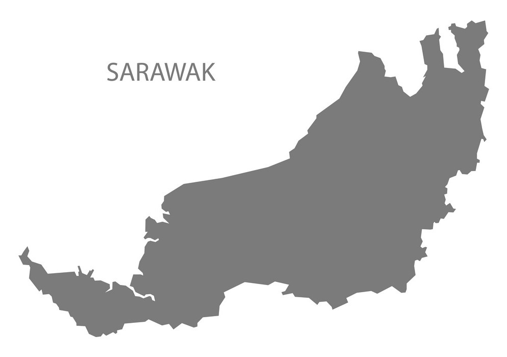

SARAWAK

Let’s face it, Malaysia’s biggest tourist attraction is and has always been the food. It’s a representation of the melting pot that is Malaysian culture—what with
all the cuisines we’ve been influenced by, given a personal twist, and put our stamp on.
Sarawak Cuisine
When it comes to food, Malaysia truly has it all, and there are few better
places to look for it than Kuching, the capital of Sarawakand one of the two states on Borneo island that comprise East Malaysia. Here are our picks of some of the
best dishes and places to eat in Kuching.
Laksa Sarawak
Closely related to other laksa varieties, Sarawak laksa is characterized by a subtle, mild flavor. Consisting of a flavorful chicken or shrimp-based broth that is seasoned with thick laksa paste, which sometimes includes more than twenty different ingredients, the soup is accompanied by vermicelli noodles, shredded omelet, cooked prawns, and shredded chicken. Spicy sambal and lime are traditionally served on the side. The origin of Sarawak laksa is still unclear, but it is believed that the dish appeared when Goh Lik Teck began to offer his noodle dish along Kuching’s Carpenter Street in 1945.
According to popular belief, the thick paste used in the dish was popularized by the Tan family from Kuching, somewhere between the 1960s and 1970s. Tan Yong Him experimented with herbs and spices to create a basic paste, which he later distributed under the brand name Swallow. The product was soon picked up by many vendors, who then included Sarawak laksa on their menus. Today, it is a signature dish of Sarawak and the city of Kuching.
Mee Kolok
Kolok mee is a traditional Malaysian dish hailing from Sarawak. This simple dish consists of egg noodles that are tossed in sauce and topped or served with sliced barbecued pork
(char siu), minced pork, and fried onions. In hawker stalls, the dish is often made with lard. Kolo mee can be additionally enriched with fish balls, wontons, and vegetables such
as choy sum (a leafy vegetable). It's believed that the dish was created under the influence of Chinese cuisine, and today it's served for breakfast, lunch, and dinner in Sarawak, especially in Kuching.
Umai
Umai is traditionally a standard lunch meal for the Melanau fishermen. Thin slivers of raw fresh fish, usually iced but not frozen, combined with thinly sliced onions, chilli,
salt and juice from sour fruits like lime or assam go into preparing this dish. The dish is usually accompanied by a bowl of toasted sago pearls and is so simple that fisherman
prepare it easily on their boats. It is Sarawak's equivalent of the "Sashimi". This exotic delicacy can be found at food centers, food markets and certain coffeeshops. Ask around for most recommended.